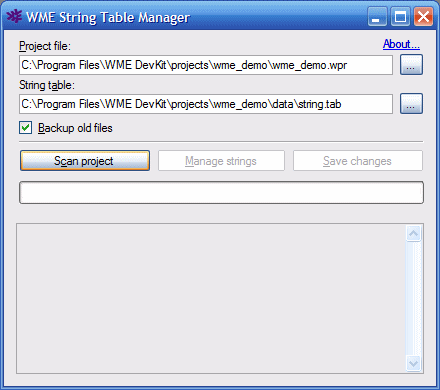
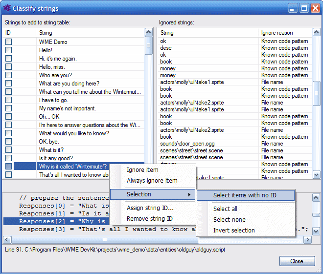

WME String Table Manager is a simple tool for extracting all in-game texts from your WME project and export them to a string table for localization purposes. It also modifies the game files and scripts and replaces the original string occurences with their "localizable" form.
For example this line in the script:
this.Talk("Hello, miss.");
will become:
this.Talk("/str0003/Hello, miss.");
And the generated string table will contain the extracted string:
str0003 Hello, miss.
For more information on localization support in WME please see the Localization chapter.
Start the program and fill in the two text boxes. Choose a path to your WME project file (.wpr) and a path to a string table. You can either select an existing string table file, or a non-existing. In the latter case the file will be created.
Additionally you can check or uncheck the "Backup old files" option. It is recommended to leave this option enabled. (Note: If you have the project file open in WME Project Manager, please close it, otherwise String Table Manager won't be able to save the localized name of the game to the 'default.game' file.)

Once the paths are set, click the "Scan project" button. String Table Manager will extract all strings from the project and load the contents of the original string table (if any). It will then try to automatically remove all strings which are not supposed to be translated (e.g. event names, item names, file names, scene node names etc.).
After the project is scanned, click the "Manage strings" button. It will open
a new window which contains all the localizable strings on the left and all the
ignored string on the right. Now please carefuly examine the lists. If there are
still some strings left which shouldn't be localized, you can move them to the
right list. Right-click the item and choose either "Ignore item" or "Always
ignore item" from the context menu. The "Always ignore" command will add the
string to the global ignore list, therefore next time you scan the project, this
string will be automatically ignored.
Similarly, you can return any ignored string back to the left list by
right-clicking it and choosing the "Unignore item" command from the context
menu.
The left list allows you to choose several items at once by checking the check-boxes on the left. To select a block of items, select the first one, then hold the Shift key and click the last item. Similarly, to deselect a block of items, select the first one, then hold Ctrl+Shift keys and click the last item.
Alternatively you can use the "Selection" submenu in the context menu to select all/none, invert selection, or only select items with no string ID assigned.

Make sure the left list only contains strings which are supposed to be
translated. Now you can assign the unique string ID to each of the string. You
will probably want to choose multiple items before assigning the IDs.
Choose one or more items, right-click and select the "Assign string ID..."
command from the context menu. Now you need to choose the string ID itself. You
can choose any word/code you want, for example "str". You can either assign the
same code to all the strings in the game, or you can use different code
depending on the string context (for example, you might use different codes
depending on which character uses the line).
Fill in the code and click OK (the window offers you all the codes previously
used in your project). String Table Manager will now assign the chosen code to
all the selected items, and it adds a number to make the string IDs unique.
After all strings were assigned a string ID, click the "Close" button and return
back to the main window. Here you can save the changes back to your project
files by clicking the "Save changes" button. This command will add the new
strings to the end of the string table, and it will replace the original strings
in your game files/scripts with their localizable form (see above).
You can go through this entire process multiple times, as you add new game
content. String Table Manager will extract all the newly added strings and
you'll be able to assign a string ID to them.
WME String Table Manager requires
Microsoft .NET Framework 2.0.